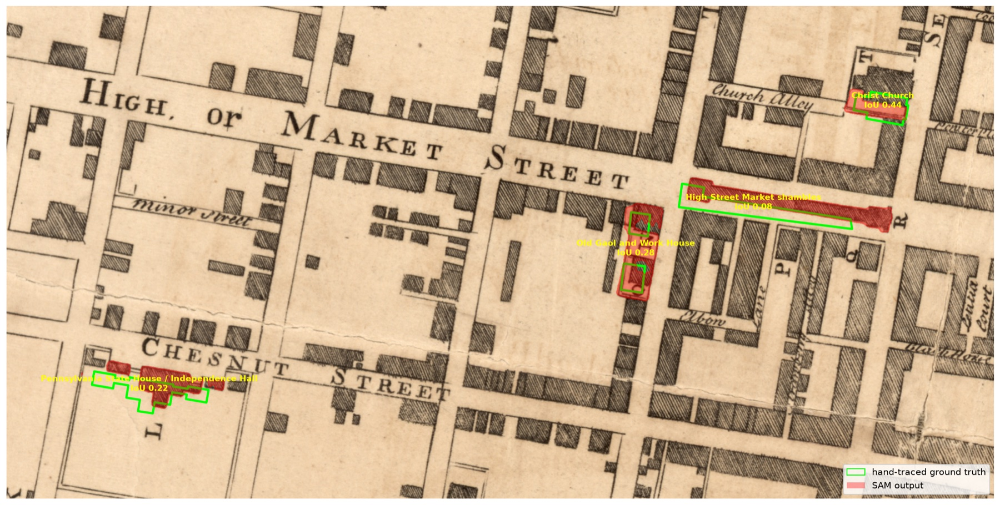

A TimeWalk toolset for turning georeferenced historical maps into PostGIS building footprints, with SAM (Segment Anything) doing the tedious part of tracing ink. Repo: TimeWalk/Map_Reader on Gitea.
TimeWalk rebuilds historical cities (Manhattan 1776, Philadelphia 1776, Boston…)
in Unreal Engine. The geometry pipeline starts with a period map, georeferenced as a
Cloud-Optimized GeoTIFF (COG), from which we trace individual building footprints into
the timewalk PostGIS schema. Hand-tracing is accurate but slow — minutes
per building, and colonial Philadelphia alone has thousands. Map Reader collects
tooling that lets a segmentation model (Meta's SAM) do the outline work from a single
click or box prompt, while a human stays in the loop for verification.
We ran the scripted samgeo flow against a map we had already hand-traced, so we
could score the machine against human ground truth. Source raster:
tw_1762_philadelphia_map_clarkson_biddle_cog.tif (EPSG:3857, 0.41 m/px,
our best-georeferenced Philadelphia sheet — median residual ~6 m). Ground truth:
hand-traced landmark parcels in PostGIS
(timewalk."1776_philadelphia_parcels_landmarks"). Four landmarks that
existed in 1762 were prompted with a padded box each (simulating a user dragging a
rough box), on a 2298×1148 px crop of the city core, SAM ViT-B on CPU (Mac mini).
| id | building | IoU | precision | recall | predict |
|---|---|---|---|---|---|
| 1 | Pennsylvania State House / Independence Hall | 0.220 | 0.349 | 0.374 | 0.08 s |
| 2 | Christ Church | 0.442 | 0.721 | 0.532 | 0.07 s |
| 13 | High Street Market shambles | 0.081 | 0.127 | 0.181 | 0.06 s |
| 19 | Old Gaol and Work House (Old Stone Prison) | 0.281 | 0.302 | 0.808 | 0.06 s |
| mean | 0.256 | ||||
Timing on CPU: one-time image encode ~5 s per window, then 0.06–0.09 s per building prompt. (Box-only prompts scored mean IoU 0.186; adding the centroid point raised it to 0.256.)

Mean IoU 0.256 is too low for unattended auto-tracing, and the reasons are instructive: SAM tends to grab a whole hatched block or street-length strip from one prompt; thin geometries (the market shambles is ~10 px wide) lose most of their IoU to a few pixels of lateral offset; and for surviving buildings our ground truth is the modern OSM footprint by policy, which intentionally disagrees with the period ink SAM is tracing. The ~6 m median georeferencing residual (~15 px) shifts everything a little more.
The speed result is the real finding: after a one-time ~5 s encode, prompts return in under a tenth of a second on a CPU. That makes the interactive QGIS Geo-SAM flow genuinely viable — click a building, get a draft polygon instantly, fix its corners, accept. SAM is a tracing accelerant, not a tracer. Upgrade paths: the larger ViT-H checkpoint, negative points on neighboring buildings to split hatch blocks, and MapSAM-style fine-tuning on our own hand-traced pairs.
torch + torchgeo into QGIS's Python first,
then copy the plugin into your QGIS plugins folder and enable it).# 1. environment (Python ≥3.10)
python3 -m venv env
env/bin/pip install segment-geospatial torch torchvision
# 2. crop a working window from the COG (bounds in EPSG:3857)
gdal_translate -projwin XMIN YMAX XMAX YMIN \
tw_1762_philadelphia_map_clarkson_biddle_cog.tif crop.tif
# (or rasterio: see pilot/crop.py — useful when brew gdal is broken)
# 3. segment with box/point prompts and vectorize
# (full script: pilot/run_sam.py)
python - <<'EOF'
from samgeo import SamGeo
sam = SamGeo(model_type="vit_b", automatic=False) # checkpoint auto-downloads
sam.set_image("crop.tif") # one-time encode
masks, scores, _ = sam.predictor.predict(box=box_px, multimask_output=False)
# vectorize mask -> polygons with rasterio.features.shapes (georeferenced)
EOF
# 4. score against ground truth / inspect
python pilot/compare_iou.py
ogr2ogr -f PostgreSQL \
PG:"host=db.<project>.supabase.co port=5432 dbname=postgres user=postgres sslmode=require" \
pilot/results/sam_output.gpkg sam_footprints \
-nln timewalk.sam_footprint_candidates \
-nlt MULTIPOLYGON -t_srs EPSG:3857 -lco GEOMETRY_NAME=geomLoad into a candidates table, review in QGIS against the raster, then merge approved rows into the era parcel table.
Demolished buildings: trace the drawn ink on the aligned period raster (full plot for burial grounds/yards). Surviving buildings: use the true modern OSM footprint, even where the period ink disagrees — plate warp and schematic drawing make the ink less trustworthy than the standing building.
Georeferencing standard for all new maps: dense (30+) label-verified GCPs, TPS warp, OSM road-overlay verification.